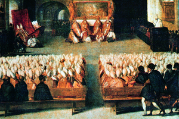
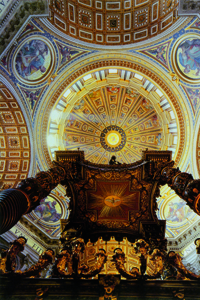
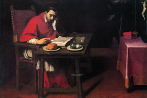

Lezione 12  Riforma e controriforma
Riforma e controriforma


TRENTO
Il concilio di Trento (1545-1563), di cui qui vediamo una seduta in un anonimo dipinto veneziano del Cinquecento, venne convocato da papa Paolo III e stabilì dogmaticamente la struttura e la gerarchia della Chiesa cattolica e le linee guida dell'azione antiprotestante.
ROMA
Lo stile artistico che caratterizza a partire dal Seicento la cultura della Controriforma è il Barocco, che deriva il suo nome da un tipo particolare di sillogismo molto complicato. Esso si traduce visivamente in una grande magnificenza e in arditi virtuosismi volti ad ingannare e stupire la percezione dello spettatore: ne è un perfetto esempio, tra architettura, pittura e scultura, il baldacchino di San Pietro, qui sormontato dalla cupola della Basilica, opera del grande Gian Lorenzo Bernini.
MILANO
L’azione della Controriforma a Milano è inscindibile dalla figura dell’arcivescovo san Carlo Borromeo, che lottò strenuamente per l’applicazione nella diocesi lombarda delle norme del Concilio di Trento. La sua vita ascetica e la sua grande energia riformatrice gli valgono la canonizzazione all’inizio del Seicento. Il pittore lombardo Daniele Crespi lo ritrae qui durante uno dei suoi parchi pasti (si dice si cibasse di solo pane).